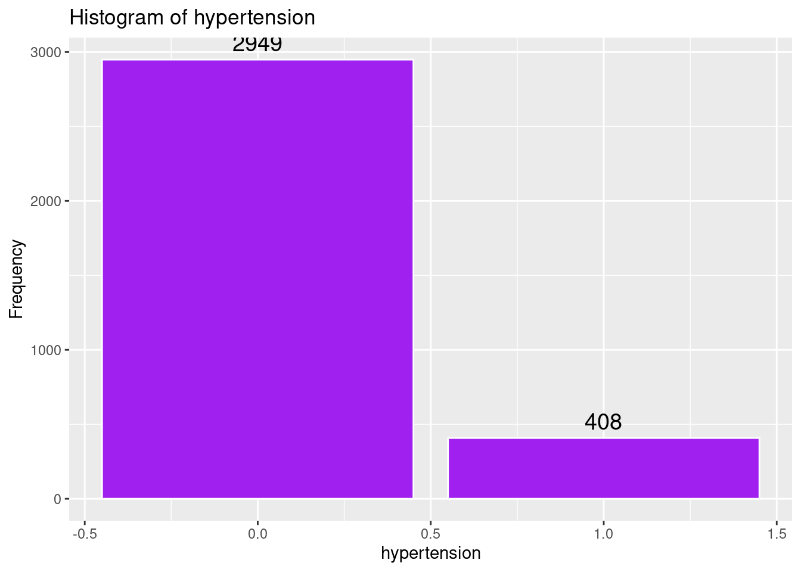
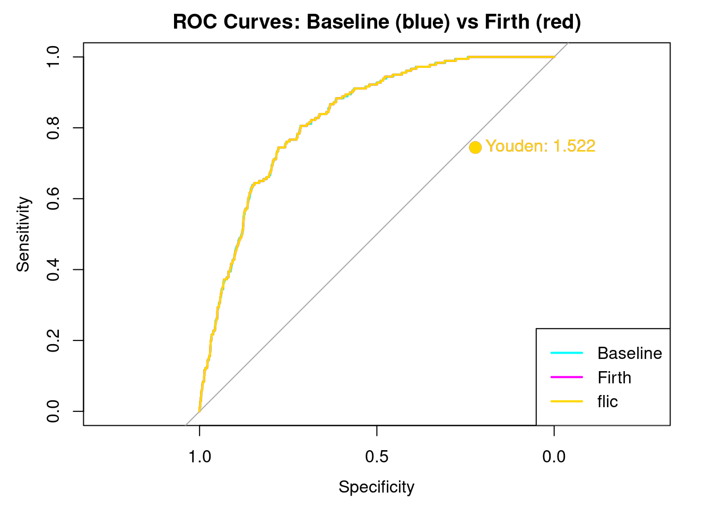
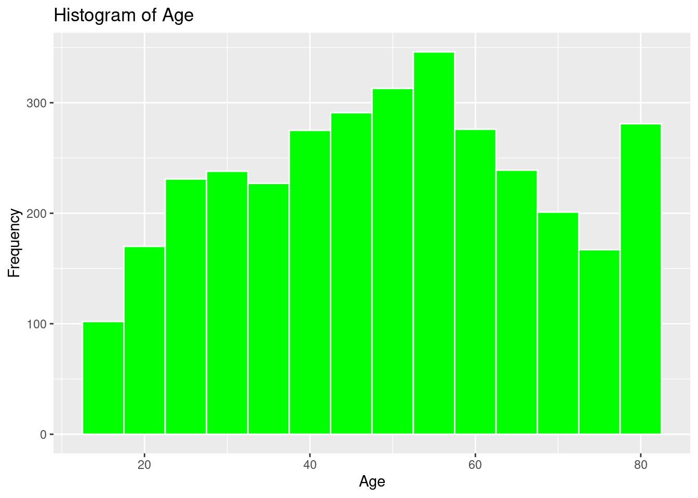
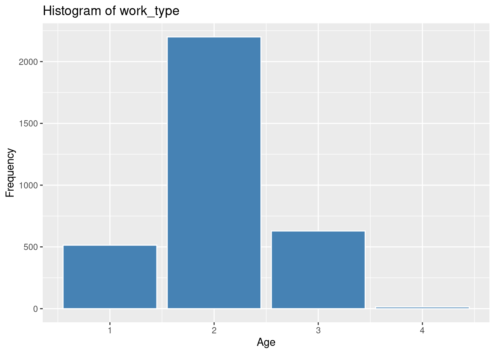
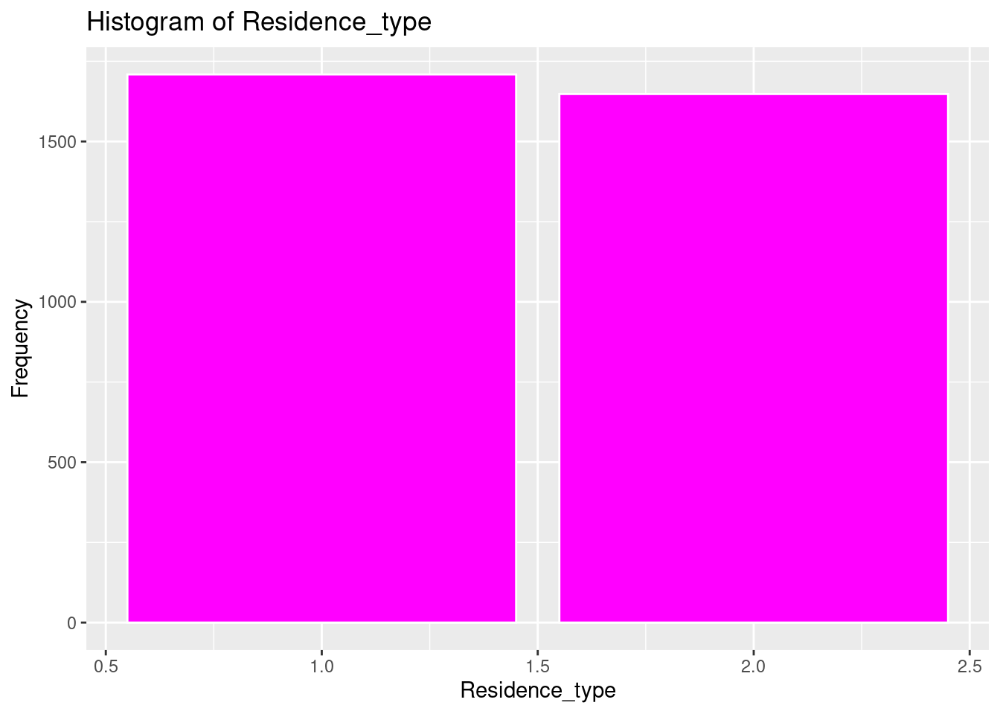
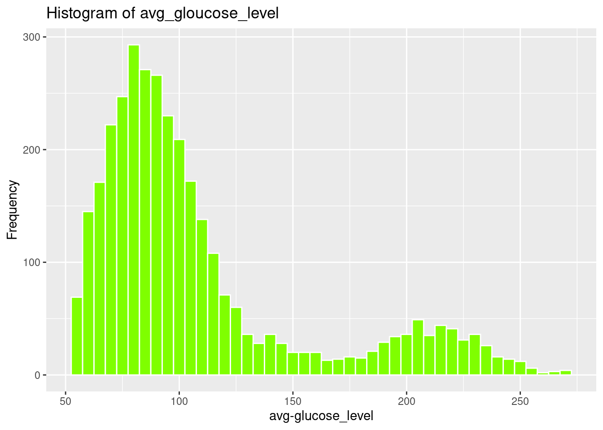
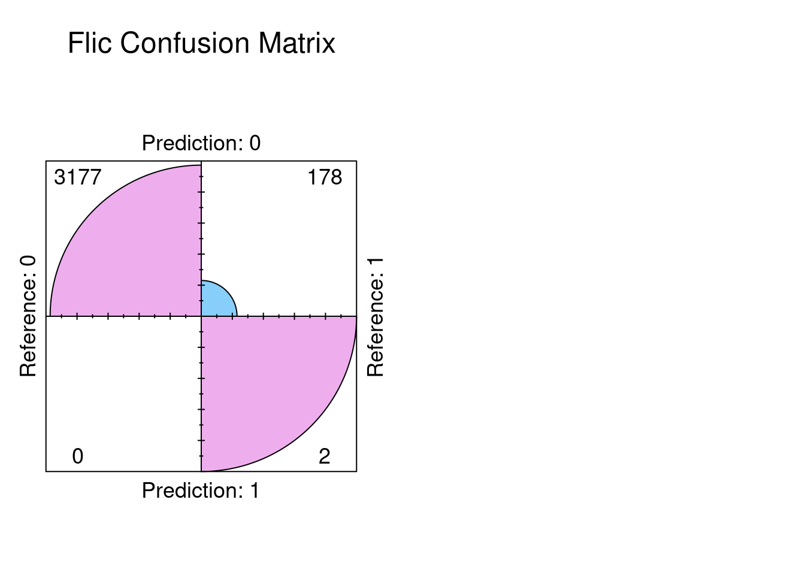

Code
# options(repos = c(CRAN = "https://cloud.r-project.org"))
packages <- c("dplyr", "car", "ResourceSelection", "caret", "pROC", "logistf", "Hmisc", "rcompanion", "ggplot2", "summarytools", "tidyverse", "knitr")
# install.packages(packages)Reproducing Steve code in baseFirthFlic1116.qmd and RFirth11116asfactor_allbutflac.R using the dataset Stroke Prediction Dataset.
First, we need to load the required R packages and the dataset. The dataset is publicly available on Kaggle and was originally created by McKinsey & Company[1].
# options(repos = c(CRAN = "https://cloud.r-project.org"))
packages <- c("dplyr", "car", "ResourceSelection", "caret", "pROC", "logistf", "Hmisc", "rcompanion", "ggplot2", "summarytools", "tidyverse", "knitr")
# install.packages(packages)We can use this to check installed packages:
```{r}
renv::activate("website")
"yardstick" %in% rownames(installed.packages())
```lapply(packages, library, character.only = TRUE)[[1]]
[1] "dplyr" "stats" "graphics" "grDevices" "datasets" "utils"
[7] "methods" "base"
[[2]]
[1] "car" "carData" "dplyr" "stats" "graphics" "grDevices"
[7] "datasets" "utils" "methods" "base"
[[3]]
[1] "ResourceSelection" "car" "carData"
[4] "dplyr" "stats" "graphics"
[7] "grDevices" "datasets" "utils"
[10] "methods" "base"
[[4]]
[1] "caret" "lattice" "ggplot2"
[4] "ResourceSelection" "car" "carData"
[7] "dplyr" "stats" "graphics"
[10] "grDevices" "datasets" "utils"
[13] "methods" "base"
[[5]]
[1] "pROC" "caret" "lattice"
[4] "ggplot2" "ResourceSelection" "car"
[7] "carData" "dplyr" "stats"
[10] "graphics" "grDevices" "datasets"
[13] "utils" "methods" "base"
[[6]]
[1] "logistf" "pROC" "caret"
[4] "lattice" "ggplot2" "ResourceSelection"
[7] "car" "carData" "dplyr"
[10] "stats" "graphics" "grDevices"
[13] "datasets" "utils" "methods"
[16] "base"
[[7]]
[1] "Hmisc" "logistf" "pROC"
[4] "caret" "lattice" "ggplot2"
[7] "ResourceSelection" "car" "carData"
[10] "dplyr" "stats" "graphics"
[13] "grDevices" "datasets" "utils"
[16] "methods" "base"
[[8]]
[1] "rcompanion" "Hmisc" "logistf"
[4] "pROC" "caret" "lattice"
[7] "ggplot2" "ResourceSelection" "car"
[10] "carData" "dplyr" "stats"
[13] "graphics" "grDevices" "datasets"
[16] "utils" "methods" "base"
[[9]]
[1] "rcompanion" "Hmisc" "logistf"
[4] "pROC" "caret" "lattice"
[7] "ggplot2" "ResourceSelection" "car"
[10] "carData" "dplyr" "stats"
[13] "graphics" "grDevices" "datasets"
[16] "utils" "methods" "base"
[[10]]
[1] "summarytools" "rcompanion" "Hmisc"
[4] "logistf" "pROC" "caret"
[7] "lattice" "ggplot2" "ResourceSelection"
[10] "car" "carData" "dplyr"
[13] "stats" "graphics" "grDevices"
[16] "datasets" "utils" "methods"
[19] "base"
[[11]]
[1] "lubridate" "forcats" "stringr"
[4] "purrr" "readr" "tidyr"
[7] "tibble" "tidyverse" "summarytools"
[10] "rcompanion" "Hmisc" "logistf"
[13] "pROC" "caret" "lattice"
[16] "ggplot2" "ResourceSelection" "car"
[19] "carData" "dplyr" "stats"
[22] "graphics" "grDevices" "datasets"
[25] "utils" "methods" "base"
[[12]]
[1] "knitr" "lubridate" "forcats"
[4] "stringr" "purrr" "readr"
[7] "tidyr" "tibble" "tidyverse"
[10] "summarytools" "rcompanion" "Hmisc"
[13] "logistf" "pROC" "caret"
[16] "lattice" "ggplot2" "ResourceSelection"
[19] "car" "carData" "dplyr"
[22] "stats" "graphics" "grDevices"
[25] "datasets" "utils" "methods"
[28] "base" # Set seed for reproducibility
set.seed(123)Might need to deal with the conflicts later:
We will load the dataset and handle the data given the exploration done in Week5. The id column is unnecessary for prediction as well there are only 2 genders significant for prediction.
Below will be loading the stroke.csv and performing necessary changes to the dataset and loading into the DataFrame: stroke1
find_git_root <- function(start = getwd()) {
path <- normalizePath(start, winslash = "/", mustWork = TRUE)
while (path != dirname(path)) {
if (dir.exists(file.path(path, ".git"))) return(path)
path <- dirname(path)
}
stop("No .git directory found — are you inside a Git repository?")
}
repo_root <- find_git_root()
datasets_path <- file.path(repo_root, "datasets")
# Reading the datafile in (the same one you got for us Renan)#
steve_dataset_path <- file.path(datasets_path, "steve/stroke.csv")
stroke1 = read_csv(steve_dataset_path, show_col_types = FALSE)Coding the Predictors and Omitting irrelevant values
Because we are using Logistic Regression a Quantitative tool, all predictors and the outcome variable must also be coded to quantitative equivalents. We also had to deal with N/A… so there were predictor variables in the dataset that had “N/A”, Unknown, Children and Other. It would be easier to recode all the irrelevant values as “N/A” and get rid of them all at the same time. We also recoded gender to 1 as male and 2 as female. We also limited the bmi predictor to 2 places after the decimal.Finally we recoded all text categorical variables into numeric variables.
stroke1[stroke1 == "N/A" | stroke1 == "Unknown" | stroke1 == "children" | stroke1 == "other"] <- NA
stroke1$bmi <- round(as.numeric(stroke1$bmi), 2)
stroke1$gender[stroke1$gender == "Male"] <- 1
stroke1$gender[stroke1$gender == "Female"] <- 2
stroke1$gender <- as.numeric(stroke1$gender)Warning: NAs introduced by coercionstroke1$ever_married[stroke1$ever_married == "Yes"] <- 1
stroke1$ever_married[stroke1$ever_married == "No"] <- 2
stroke1$ever_married <- as.numeric(stroke1$ever_married)
stroke1$work_type[stroke1$work_type == "Govt_job"] <- 1
stroke1$work_type[stroke1$work_type == "Private"] <- 2
stroke1$work_type[stroke1$work_type == "Self-employed"] <- 3
stroke1$work_type[stroke1$work_type == "Never_worked"] <- 4
stroke1$work_type <- as.numeric(stroke1$work_type)
stroke1$Residence_type[stroke1$Residence_type == "Urban"] <- 1
stroke1$Residence_type[stroke1$Residence_type == "Rural"] <- 2
stroke1$Residence_type <- as.numeric(stroke1$Residence_type)
stroke1$avg_glucose_level <- as.numeric(stroke1$avg_glucose_level)
stroke1$heart_disease <- as.numeric(stroke1$heart_disease)
stroke1$hypertension <- as.numeric(stroke1$hypertension)
stroke1$age <- round(as.numeric(stroke1$age), 2)
stroke1$stroke <- as.numeric(stroke1$stroke)
stroke1$smoking_status[stroke1$smoking_status == "never smoked"] <- 1
stroke1$smoking_status[stroke1$smoking_status == "formerly smoked"] <- 2
stroke1$smoking_status[stroke1$smoking_status == "smokes"] <- 3
stroke1$smoking_status <- as.numeric(stroke1$smoking_status)
stroke1 <- stroke1[, !(names(stroke1) %in% "id")]stroke1$stroke <- as.factor(stroke1$stroke)
stroke1_clean <- na.omit(stroke1)
strokeclean <- stroke1_clean
fourassume <- stroke1_cleanShowing Descriptive Statistics for all variables, Mean, Std Deviation, and Interquartile Range
dfSummary(strokeclean)Data Frame Summary
strokeclean
Dimensions: 3357 x 11
Duplicates: 0
----------------------------------------------------------------------------------------------------------------------
No Variable Stats / Values Freqs (% of Valid) Graph Valid Missing
---- ------------------- -------------------------- ---------------------- ---------------------- ---------- ---------
1 gender Min : 1 1 : 1305 (38.9%) IIIIIII 3357 0
[numeric] Mean : 1.6 2 : 2052 (61.1%) IIIIIIIIIIII (100.0%) (0.0%)
Max : 2
2 age Mean (sd) : 49.4 (18.3) 70 distinct values . : . 3357 0
[numeric] min < med < max: . . : : : : . : (100.0%) (0.0%)
13 < 50 < 82 : : : : : : : : :
IQR (CV) : 28 (0.4) : : : : : : : : : :
: : : : : : : : : :
3 hypertension Min : 0 0 : 2949 (87.8%) IIIIIIIIIIIIIIIII 3357 0
[numeric] Mean : 0.1 1 : 408 (12.2%) II (100.0%) (0.0%)
Max : 1
4 heart_disease Min : 0 0 : 3151 (93.9%) IIIIIIIIIIIIIIIIII 3357 0
[numeric] Mean : 0.1 1 : 206 ( 6.1%) I (100.0%) (0.0%)
Max : 1
5 ever_married Min : 1 1 : 2599 (77.4%) IIIIIIIIIIIIIII 3357 0
[numeric] Mean : 1.2 2 : 758 (22.6%) IIII (100.0%) (0.0%)
Max : 2
6 work_type Mean (sd) : 2 (0.6) 1 : 514 (15.3%) III 3357 0
[numeric] min < med < max: 2 : 2200 (65.5%) IIIIIIIIIIIII (100.0%) (0.0%)
1 < 2 < 4 3 : 629 (18.7%) III
IQR (CV) : 0 (0.3) 4 : 14 ( 0.4%)
7 Residence_type Min : 1 1 : 1709 (50.9%) IIIIIIIIII 3357 0
[numeric] Mean : 1.5 2 : 1648 (49.1%) IIIIIIIII (100.0%) (0.0%)
Max : 2
8 avg_glucose_level Mean (sd) : 108.4 (47.9) 2861 distinct values : 3357 0
[numeric] min < med < max: . : (100.0%) (0.0%)
55.1 < 92.3 < 271.7 : : :
IQR (CV) : 39 (0.4) : : :
: : : : . . . . .
9 bmi Mean (sd) : 30.4 (7.2) 364 distinct values . : 3357 0
[numeric] min < med < max: : : (100.0%) (0.0%)
11.5 < 29.2 < 92 : :
IQR (CV) : 8.8 (0.2) : : :
. : : : .
10 smoking_status Mean (sd) : 1.7 (0.8) 1 : 1798 (53.6%) IIIIIIIIII 3357 0
[numeric] min < med < max: 2 : 824 (24.5%) IIII (100.0%) (0.0%)
1 < 1 < 3 3 : 735 (21.9%) IIII
IQR (CV) : 1 (0.5)
11 stroke 1. 0 3177 (94.6%) IIIIIIIIIIIIIIIIII 3357 0
[factor] 2. 1 180 ( 5.4%) I (100.0%) (0.0%)
----------------------------------------------------------------------------------------------------------------------Looking at the distribution of all the predictor indicators and the outcome indicator with Histograms
# Histogram of gender
ggplot(strokeclean, aes(x = gender)) +
geom_bar(fill = "blue",
color = "white") +
stat_count(aes(label = ..count..), geom = "text", vjust = -0.5, size = 5) +
labs(title = "Histogram of gender",
x = "gender",
y = "Frequency")Warning: The dot-dot notation (`..count..`) was deprecated in ggplot2 3.4.0.
ℹ Please use `after_stat(count)` instead.
# Histogram of Age
ggplot(strokeclean, aes(x = age)) +
geom_histogram(binwidth = 5,
fill = "green",
color = "white") +
stat_count(aes(label = ..count..), geom = "text", vjust = -0.5, size = 5) +
labs(title = "Histogram of Age",
x = "Age",
y = "Frequency")
# Histogram of hypertension
ggplot(strokeclean, aes(x = hypertension)) +
geom_bar(fill = "purple",
color = "white") +
stat_count(aes(label = ..count..), geom = "text", vjust = -0.5, size = 5) +
labs(title = "Histogram of hypertension",
x = "hypertension",
y = "Frequency")
# Histogram of heart_disease
ggplot(strokeclean, aes(x = heart_disease)) +
geom_bar( fill = "orange",
color = "white") +
stat_count(aes(label = ..count..), geom = "text", vjust = -0.5, size = 5) +
labs(title = "Histogram of heart_disease",
x = "HeartDisease",
y = "Frequency")
# Histogram of ever_married
ggplot(strokeclean, aes(x = ever_married)) +
geom_bar(fill = "aquamarine",
color = "white") +
stat_count(aes(label = ..count..), geom = "text", vjust = -0.5, size = 5) +
labs(title = "Histogram of ever_married",
x = "EverMarried",
y = "Frequency")
# Histogram of work_type
ggplot(strokeclean, aes(x = work_type)) +
geom_bar(fill = "steelblue",
color = "white") +
stat_count(aes(label = ..count..), geom = "text", vjust = -0.5, size = 5) +
labs(title = "Histogram of work_type",
x = "WorkType",
y = "Frequency")
# Histogram of Residence_type
ggplot(strokeclean, aes(x = Residence_type)) +
geom_bar(fill = "magenta",
color = "white") +
stat_count(aes(label = ..count..), geom = "text", vjust = -0.5, size = 5) +
labs(title = "Histogram of Residence_type",
x = "Residence_type",
y = "Frequency")
# Histogram of avg_gloucose_level
ggplot(strokeclean, aes(x = avg_glucose_level)) +
geom_histogram(binwidth = 5,
fill = "chartreuse",
color = "white") +
stat_count(aes(label = ..count..), geom = "text", vjust = -0.5, size = 5) +
labs(title = "Histogram of avg_gloucose_level",
x = "avg-glucose_level",
y = "Frequency")
# Histogram of bmi
ggplot(strokeclean, aes(x = bmi)) +
geom_histogram(binwidth = 5,
fill = "gold",
color = "white") +
stat_count(aes(label = ..count..), geom = "text", vjust = -0.5, size = 5) +
labs(title = "Histogram of bmi",
x = "bmi",
y = "Frequency")
# smoking_status
ggplot(strokeclean, aes(x = smoking_status)) +
geom_bar(fill = "deepskyblue",
color = "white") +
stat_count(aes(label = ..count..), geom = "text", vjust = -0.5, size = 5) +
labs(title = "smoking_status",
x = "smoking_status",
y = "Frequency")
# Histogram of Age
ggplot(strokeclean, aes(x = stroke)) +
geom_bar(fill = "tan",
color = "white") +
stat_count(aes(label = ..count..), geom = "text", vjust = -0.5, size = 5) +
labs(title = "Histogram of Age",
x = "stroke",
y = "Frequency")
Logistic regression is a statistical modeling technique that predicts the probability of a binary outcome (such as 0 or 1) using one or more independent variables.
The key idea is to model the log odds (also called the logit) of the probability of the event as a linear function of the predictors:
The key idea is to model the log odds (also called the logit) of the probability of the event as a linear function of the predictors:
log(p1−p)=β0+β1x1+β2x2+…+βkxklog(1−pp)=β0+β1x1+β2x2+…+βkxk
where pp is the probability of the outcome (e.g., stroke), the xixi are predictors, and the βiβi are their coefficients.
Solving for pp, the equation becomes:
p=11+e−(β0+β1x1+…+βkxk)p=1+e−(β0+β1x1+…+βkxk)1
This is the logistic function, which always outputs values between 0 and 1, making it ideal for probabilities.
(1) Odds are defined as p/(1−p)p/(1-p)p/(1−p), the ratio of the probability of the event to the probability of its complement.
(2) The logit transformation (natural log of the odds) turns this nonlinear problem into a linear one, so standard linear modeling techniques can be used for estimation.
(3) Coefficients (β) are commonly estimated using maximum likelihood methods, not ordinary least squares.
formula <- stroke ~ gender + age + hypertension + heart_disease + ever_married +
work_type + Residence_type + avg_glucose_level + bmi + smoking_statusA comparison between Logistic Regression and Multiple Regression is shown below
| Feature | Multiple Regression | Logistic Regression |
|---|---|---|
| Outcome variable type | Continuous (real numbers) | Categorical/Binary (e.g., 0 or 1) |
| Example prediction | Predicting house prices | Predicting disease presence/absence |
| Model equation | Linear combination of predictors | Log odds/logit (S-shaped curve: logistic function) |
| Estimation method | Least squares | Maximum likelihood |
| Output type | Actual values (e.g., $125,000) | Probability of being in a category (e.g., 87%) |
| Usage | Continuous outcome (income, cost, score) | Categorical outcome (yes/no, 0/1) |
As you can see the prediction of having a stroke or not with the outcome variable clearly shows we should use Logistic Regression. Note. The predictor variables can be either categorical or continuous. Its the outcome variable that is critical in choosing.
But before we can run the all the models of Logistic Regression, there are 4 assumptions of Logistic Regression that we need to determine if the dataset and models can run without violating any or all of the assumptions of Logistic Regression. Note testing the assumptions are done for numerical predictors only statistically speaking. Categorical predictors are tested visually with the histograms above.
# Assumption 1: The Outcome Variable is 0 or 1
unique(fourassume$stroke)[1] 1 0
Levels: 0 1# Assumption 2: There is linear relationship between the outcome variable and each predictor that is numeric. Categorical predictors are reviewed in the histograms avove
fourassume$ageadj <- fourassume$age + abs(min(fourassume$age)) + 1
fourassume$avg_glucose_leveladj <- fourassume$avg_glucose_level + abs(min(fourassume$avg_glucose_level)) + 1
fourassume$bmiadj <- fourassume$bmi + abs(min(fourassume$bmi)) + 1
str(fourassume)tibble [3,357 × 14] (S3: tbl_df/tbl/data.frame)
$ gender : num [1:3357] 1 1 2 2 1 1 2 2 2 2 ...
$ age : num [1:3357] 67 80 49 79 81 74 69 81 61 54 ...
$ hypertension : num [1:3357] 0 0 0 1 0 1 0 1 0 0 ...
$ heart_disease : num [1:3357] 1 1 0 0 0 1 0 0 1 0 ...
$ ever_married : num [1:3357] 1 1 1 1 1 1 2 1 1 1 ...
$ work_type : num [1:3357] 2 2 2 3 2 2 2 2 1 2 ...
$ Residence_type : num [1:3357] 1 2 1 2 1 2 1 2 2 1 ...
$ avg_glucose_level : num [1:3357] 229 106 171 174 186 ...
$ bmi : num [1:3357] 36.6 32.5 34.4 24 29 27.4 22.8 29.7 36.8 27.3 ...
$ smoking_status : num [1:3357] 2 1 3 1 2 1 1 1 3 3 ...
$ stroke : Factor w/ 2 levels "0","1": 2 2 2 2 2 2 2 2 2 2 ...
$ ageadj : num [1:3357] 81 94 63 93 95 88 83 95 75 68 ...
$ avg_glucose_leveladj: num [1:3357] 285 162 227 230 242 ...
$ bmiadj : num [1:3357] 49.1 45 46.9 36.5 41.5 39.9 35.3 42.2 49.3 39.8 ...
- attr(*, "na.action")= 'omit' Named int [1:1753] 2 9 10 14 20 24 28 30 32 39 ...
..- attr(*, "names")= chr [1:1753] "2" "9" "10" "14" ...numeric_vars <- sapply(fourassume, is.numeric)
fourassume_numeric <- fourassume[, numeric_vars]
rcorr(as.matrix(fourassume_numeric)) gender age hypertension heart_disease ever_married
gender 1.00 -0.06 -0.04 -0.10 0.03
age -0.06 1.00 0.26 0.26 -0.49
hypertension -0.04 0.26 1.00 0.11 -0.11
heart_disease -0.10 0.26 0.11 1.00 -0.07
ever_married 0.03 -0.49 -0.11 -0.07 1.00
work_type 0.01 0.14 0.05 0.03 -0.02
Residence_type -0.01 -0.02 0.00 -0.01 0.01
avg_glucose_level -0.07 0.24 0.17 0.14 -0.12
bmi -0.02 0.04 0.13 0.00 -0.13
smoking_status -0.08 0.03 -0.01 0.06 -0.06
ageadj -0.06 1.00 0.26 0.26 -0.49
avg_glucose_leveladj -0.07 0.24 0.17 0.14 -0.12
bmiadj -0.02 0.04 0.13 0.00 -0.13
work_type Residence_type avg_glucose_level bmi
gender 0.01 -0.01 -0.07 -0.02
age 0.14 -0.02 0.24 0.04
hypertension 0.05 0.00 0.17 0.13
heart_disease 0.03 -0.01 0.14 0.00
ever_married -0.02 0.01 -0.12 -0.13
work_type 1.00 -0.01 0.03 -0.02
Residence_type -0.01 1.00 0.01 0.01
avg_glucose_level 0.03 0.01 1.00 0.16
bmi -0.02 0.01 0.16 1.00
smoking_status -0.02 -0.04 0.01 0.03
ageadj 0.14 -0.02 0.24 0.04
avg_glucose_leveladj 0.03 0.01 1.00 0.16
bmiadj -0.02 0.01 0.16 1.00
smoking_status ageadj avg_glucose_leveladj bmiadj
gender -0.08 -0.06 -0.07 -0.02
age 0.03 1.00 0.24 0.04
hypertension -0.01 0.26 0.17 0.13
heart_disease 0.06 0.26 0.14 0.00
ever_married -0.06 -0.49 -0.12 -0.13
work_type -0.02 0.14 0.03 -0.02
Residence_type -0.04 -0.02 0.01 0.01
avg_glucose_level 0.01 0.24 1.00 0.16
bmi 0.03 0.04 0.16 1.00
smoking_status 1.00 0.03 0.01 0.03
ageadj 0.03 1.00 0.24 0.04
avg_glucose_leveladj 0.01 0.24 1.00 0.16
bmiadj 0.03 0.04 0.16 1.00
n= 3357
P
gender age hypertension heart_disease ever_married
gender 0.0012 0.0204 0.0000 0.1140
age 0.0012 0.0000 0.0000 0.0000
hypertension 0.0204 0.0000 0.0000 0.0000
heart_disease 0.0000 0.0000 0.0000 0.0000
ever_married 0.1140 0.0000 0.0000 0.0000
work_type 0.3863 0.0000 0.0051 0.0862 0.2313
Residence_type 0.5077 0.3076 0.8569 0.5527 0.5150
avg_glucose_level 0.0000 0.0000 0.0000 0.0000 0.0000
bmi 0.2487 0.0144 0.0000 0.8185 0.0000
smoking_status 0.0000 0.0448 0.7537 0.0005 0.0009
ageadj 0.0012 0.0000 0.0000 0.0000 0.0000
avg_glucose_leveladj 0.0000 0.0000 0.0000 0.0000 0.0000
bmiadj 0.2487 0.0144 0.0000 0.8185 0.0000
work_type Residence_type avg_glucose_level bmi
gender 0.3863 0.5077 0.0000 0.2487
age 0.0000 0.3076 0.0000 0.0144
hypertension 0.0051 0.8569 0.0000 0.0000
heart_disease 0.0862 0.5527 0.0000 0.8185
ever_married 0.2313 0.5150 0.0000 0.0000
work_type 0.6768 0.0467 0.3243
Residence_type 0.6768 0.6427 0.5689
avg_glucose_level 0.0467 0.6427 0.0000
bmi 0.3243 0.5689 0.0000
smoking_status 0.3764 0.0208 0.7679 0.0925
ageadj 0.0000 0.3076 0.0000 0.0144
avg_glucose_leveladj 0.0467 0.6427 0.0000 0.0000
bmiadj 0.3243 0.5689 0.0000 0.0000
smoking_status ageadj avg_glucose_leveladj bmiadj
gender 0.0000 0.0012 0.0000 0.2487
age 0.0448 0.0000 0.0000 0.0144
hypertension 0.7537 0.0000 0.0000 0.0000
heart_disease 0.0005 0.0000 0.0000 0.8185
ever_married 0.0009 0.0000 0.0000 0.0000
work_type 0.3764 0.0000 0.0467 0.3243
Residence_type 0.0208 0.3076 0.6427 0.5689
avg_glucose_level 0.7679 0.0000 0.0000 0.0000
bmi 0.0925 0.0144 0.0000 0.0000
smoking_status 0.0448 0.7679 0.0925
ageadj 0.0448 0.0000 0.0144
avg_glucose_leveladj 0.7679 0.0000 0.0000
bmiadj 0.0925 0.0144 0.0000 fourAdj <- fourassume
fourAdj <- fourAdj[ , !(names(fourAdj) %in% c("age", "heart_disease", "avg_glucose_level", "bmi")) ]
model4 <- glm(stroke ~ ageadj + avg_glucose_leveladj + bmiadj, data=fourAdj, family=binomial)
residualPlots(model4)
Test stat Pr(>|Test stat|)
ageadj 1.9958 0.1577
avg_glucose_leveladj 0.0070 0.9331
bmiadj 0.3549 0.5514# Assumption 3: Assess Influentional Outliers that are numeric. Categorical predictors are reviewed n the hhistrams above
alias(model4)Model :
stroke ~ ageadj + avg_glucose_leveladj + bmiadjrcorr(as.matrix(fourassume_numeric)) gender age hypertension heart_disease ever_married
gender 1.00 -0.06 -0.04 -0.10 0.03
age -0.06 1.00 0.26 0.26 -0.49
hypertension -0.04 0.26 1.00 0.11 -0.11
heart_disease -0.10 0.26 0.11 1.00 -0.07
ever_married 0.03 -0.49 -0.11 -0.07 1.00
work_type 0.01 0.14 0.05 0.03 -0.02
Residence_type -0.01 -0.02 0.00 -0.01 0.01
avg_glucose_level -0.07 0.24 0.17 0.14 -0.12
bmi -0.02 0.04 0.13 0.00 -0.13
smoking_status -0.08 0.03 -0.01 0.06 -0.06
ageadj -0.06 1.00 0.26 0.26 -0.49
avg_glucose_leveladj -0.07 0.24 0.17 0.14 -0.12
bmiadj -0.02 0.04 0.13 0.00 -0.13
work_type Residence_type avg_glucose_level bmi
gender 0.01 -0.01 -0.07 -0.02
age 0.14 -0.02 0.24 0.04
hypertension 0.05 0.00 0.17 0.13
heart_disease 0.03 -0.01 0.14 0.00
ever_married -0.02 0.01 -0.12 -0.13
work_type 1.00 -0.01 0.03 -0.02
Residence_type -0.01 1.00 0.01 0.01
avg_glucose_level 0.03 0.01 1.00 0.16
bmi -0.02 0.01 0.16 1.00
smoking_status -0.02 -0.04 0.01 0.03
ageadj 0.14 -0.02 0.24 0.04
avg_glucose_leveladj 0.03 0.01 1.00 0.16
bmiadj -0.02 0.01 0.16 1.00
smoking_status ageadj avg_glucose_leveladj bmiadj
gender -0.08 -0.06 -0.07 -0.02
age 0.03 1.00 0.24 0.04
hypertension -0.01 0.26 0.17 0.13
heart_disease 0.06 0.26 0.14 0.00
ever_married -0.06 -0.49 -0.12 -0.13
work_type -0.02 0.14 0.03 -0.02
Residence_type -0.04 -0.02 0.01 0.01
avg_glucose_level 0.01 0.24 1.00 0.16
bmi 0.03 0.04 0.16 1.00
smoking_status 1.00 0.03 0.01 0.03
ageadj 0.03 1.00 0.24 0.04
avg_glucose_leveladj 0.01 0.24 1.00 0.16
bmiadj 0.03 0.04 0.16 1.00
n= 3357
P
gender age hypertension heart_disease ever_married
gender 0.0012 0.0204 0.0000 0.1140
age 0.0012 0.0000 0.0000 0.0000
hypertension 0.0204 0.0000 0.0000 0.0000
heart_disease 0.0000 0.0000 0.0000 0.0000
ever_married 0.1140 0.0000 0.0000 0.0000
work_type 0.3863 0.0000 0.0051 0.0862 0.2313
Residence_type 0.5077 0.3076 0.8569 0.5527 0.5150
avg_glucose_level 0.0000 0.0000 0.0000 0.0000 0.0000
bmi 0.2487 0.0144 0.0000 0.8185 0.0000
smoking_status 0.0000 0.0448 0.7537 0.0005 0.0009
ageadj 0.0012 0.0000 0.0000 0.0000 0.0000
avg_glucose_leveladj 0.0000 0.0000 0.0000 0.0000 0.0000
bmiadj 0.2487 0.0144 0.0000 0.8185 0.0000
work_type Residence_type avg_glucose_level bmi
gender 0.3863 0.5077 0.0000 0.2487
age 0.0000 0.3076 0.0000 0.0144
hypertension 0.0051 0.8569 0.0000 0.0000
heart_disease 0.0862 0.5527 0.0000 0.8185
ever_married 0.2313 0.5150 0.0000 0.0000
work_type 0.6768 0.0467 0.3243
Residence_type 0.6768 0.6427 0.5689
avg_glucose_level 0.0467 0.6427 0.0000
bmi 0.3243 0.5689 0.0000
smoking_status 0.3764 0.0208 0.7679 0.0925
ageadj 0.0000 0.3076 0.0000 0.0144
avg_glucose_leveladj 0.0467 0.6427 0.0000 0.0000
bmiadj 0.3243 0.5689 0.0000 0.0000
smoking_status ageadj avg_glucose_leveladj bmiadj
gender 0.0000 0.0012 0.0000 0.2487
age 0.0448 0.0000 0.0000 0.0144
hypertension 0.7537 0.0000 0.0000 0.0000
heart_disease 0.0005 0.0000 0.0000 0.8185
ever_married 0.0009 0.0000 0.0000 0.0000
work_type 0.3764 0.0000 0.0467 0.3243
Residence_type 0.0208 0.3076 0.6427 0.5689
avg_glucose_level 0.7679 0.0000 0.0000 0.0000
bmi 0.0925 0.0144 0.0000 0.0000
smoking_status 0.0448 0.7679 0.0925
ageadj 0.0448 0.0000 0.0144
avg_glucose_leveladj 0.7679 0.0000 0.0000
bmiadj 0.0925 0.0144 0.0000 influencePlot(model4)
StudRes Hat CookD
17 2.3495313 0.0040917969 0.014793349
83 2.5500288 0.0045425981 0.026906139
87 3.0778217 0.0004677603 0.012890963
131 3.2110607 0.0003364260 0.014101935
186 -0.7488292 0.0184781611 0.001532740
2583 -0.7113787 0.0167417735 0.001232964# Assumption 4: Assess Multicollinearity for numeric predictors
vif(model4) ageadj avg_glucose_leveladj bmiadj
1.070909 1.081460 1.101382 # Fit of the Model with Nagelkerke R
hoslem.test(model4$y, fitted(model4), g = 10)
Hosmer and Lemeshow goodness of fit (GOF) test
data: model4$y, fitted(model4)
X-squared = 8.8522, df = 8, p-value = 0.3549nagelkerke(model4)$Models
Model: "glm, stroke ~ ageadj + avg_glucose_leveladj + bmiadj, binomial, fourAdj"
Null: "glm, stroke ~ 1, binomial, fourAdj"
$Pseudo.R.squared.for.model.vs.null
Pseudo.R.squared
McFadden 0.1713030
Cox and Snell (ML) 0.0691131
Nagelkerke (Cragg and Uhler) 0.2022700
$Likelihood.ratio.test
Df.diff LogLik.diff Chisq p.value
-3 -120.21 240.42 7.721e-52
$Number.of.observations
Model: 3357
Null: 3357
$Messages
[1] "Note: For models fit with REML, these statistics are based on refitting with ML"
$Warnings
[1] "None"# Predictive Capability
model4_CM <- glm(stroke ~ gender + age + hypertension + heart_disease + ever_married + work_type + Residence_type + avg_glucose_level + bmi + smoking_status, data=fourassume, family = binomial)The three different models of Logistic Regression: Baseline, Firth and Flic Corrections. We are creating 3 different models to really test to see if the dataset had a stroke percentage that is less than the real percentage of stroke to population ratio in the US. Because this is a so called “rare event” Firth regression takes this into account as does its refinement FLIC.
# Baseline Logistic Regression
model_base <- glm(formula, data=strokeclean, family=binomial)
prob_base <- predict(model_base, type="response")
# Firth Logistic Regression
model_firth <- logistf(formula, data=strokeclean)
prob_firth <- predict(model_firth, type="response")
# FLIC Correction (this correction changes the intercept)
model_flic <- flic(formula, data=strokeclean)
prob_flic <- predict(model_flic, type="response")
labels <- strokeclean$strokeCreating Youdens J. Youden’s J is a good way to look at how well each model balances sensitivity and selectivity. The closer to the curve, a Youden’s J is the better the model can distinguish between sensitiviy and selectivity.
youden_point <- function(roc_obj) {
coords <- coords(roc_obj, "best", best.method = "youden", ret=c("threshold", "sensitivity", "specificity", "youden"))
return(coords)
}The Three Types of Prediction with 0.5 for consistency
# Predictions with default threshold 0.5 (for output consistency)
pred_base <- factor(ifelse(prob_base > 0.5, 1, 0), levels=c(0,1))
pred_firth <- factor(ifelse(prob_firth > 0.5, 1, 0), levels=c(0,1))
pred_flic <- factor(ifelse(prob_flic > 0.5, 1, 0), levels=c(0,1))The Function to Compute Metrics
pred_base <- factor(ifelse(prob_base > 0.5, 1, 0), levels=c(0,1))
pred_firth <- factor(ifelse(prob_firth > 0.5, 1, 0), levels=c(0,1))
pred_flic <- factor(ifelse(prob_flic > 0.5, 1, 0), levels=c(0,1))
metrics <- function(pred, prob, labels, name) {
cm <- confusionMatrix(pred, labels, positive = "1")
roc_obj <- roc(labels, as.numeric(prob))
auc_val <- auc(roc_obj)
precision <- cm$byClass["Pos Pred Value"]
recall <- cm$byClass["Sensitivity"]
f1 <- 2 * ((precision * recall) / (precision + recall))
youden <- youden_point(roc_obj)
# All list arguments separated by commas only, no '+'
list(
confusion = cm$table,
precision = precision,
recall = recall,
f1 = f1,
auc = auc_val,
roc_obj = roc_obj,
youden = youden,
model = name
)
}Intialize Results. We have to initialize results before calling the model
results_base <- metrics(pred_base, prob_base, labels, "Baseline LR")Setting levels: control = 0, case = 1Setting direction: controls < casesresults_firth <- metrics(pred_firth, prob_firth, labels, "firth LR")Setting levels: control = 0, case = 1
Setting direction: controls < casesresults_flic <- metrics(pred_flic, prob_flic, labels, "flic LR")Setting levels: control = 0, case = 1
Setting direction: controls < casesPrint Results
cat("\n== Baseline Logistic Regression ==\n")
== Baseline Logistic Regression ==print(results_base[1:6])$confusion
Reference
Prediction 0 1
0 3177 178
1 0 2
$precision
Pos Pred Value
1
$recall
Sensitivity
0.01111111
$f1
Pos Pred Value
0.02197802
$auc
Area under the curve: 0.8285
$roc_obj
Call:
roc.default(response = labels, predictor = as.numeric(prob))
Data: as.numeric(prob) in 3177 controls (labels 0) < 180 cases (labels 1).
Area under the curve: 0.8285cat("\nYouden's J (optimal threshold):\n")
Youden's J (optimal threshold):print(results_base$youden) threshold sensitivity specificity youden
1 0.06934436 0.7444444 0.7777778 1.522222cat("\n== Firth Logistic Regression ==\n")
== Firth Logistic Regression ==print(results_firth[1:6])$confusion
Reference
Prediction 0 1
0 3176 178
1 1 2
$precision
Pos Pred Value
0.6666667
$recall
Sensitivity
0.01111111
$f1
Pos Pred Value
0.02185792
$auc
Area under the curve: 0.8285
$roc_obj
Call:
roc.default(response = labels, predictor = as.numeric(prob))
Data: as.numeric(prob) in 3177 controls (labels 0) < 180 cases (labels 1).
Area under the curve: 0.8285cat("\nYouden's J (optimal threshold):\n")
Youden's J (optimal threshold):print(results_firth$youden) threshold sensitivity specificity youden
1 0.07100345 0.7444444 0.7777778 1.522222cat("\n== FLIC Logistic Regression ==\n")
== FLIC Logistic Regression ==print(results_flic[1:6])$confusion
Reference
Prediction 0 1
0 3177 178
1 0 2
$precision
Pos Pred Value
1
$recall
Sensitivity
0.01111111
$f1
Pos Pred Value
0.02197802
$auc
Area under the curve: 0.8285
$roc_obj
Call:
roc.default(response = labels, predictor = as.numeric(prob))
Data: as.numeric(prob) in 3177 controls (labels 0) < 180 cases (labels 1).
Area under the curve: 0.8285cat("\nYouden's J (optimal threshold):\n")
Youden's J (optimal threshold):print(results_flic$youden) threshold sensitivity specificity youden
1 0.06935441 0.7444444 0.7777778 1.522222Plot the ROC curves and Annotate Youden’s J on each of the Curves
plot(results_base$roc_obj, col="cyan", main="ROC Curves: Baseline (blue) vs Firth (red)")
plot(results_firth$roc_obj, col="magenta", add=TRUE)
plot(results_flic$roc_obj, col ="gold", add=TRUE)
auc(results_base$roc_obj)Area under the curve: 0.8285auc(results_firth$roc_obj)Area under the curve: 0.8285auc(results_flic$roc_obj)Area under the curve: 0.8285points(
1-results_base$youden["specificity"],
results_base$youden["sensitivity"],
col="cyan", pch=19, cex=1.5
)
points(
1-results_firth$youden["specificity"],
results_firth$youden["sensitivity"],
col="magenta", pch=19, cex=1.5
)
points(
1-results_flic$youden["specificity"],
results_flic$youden["sensitivity"],
col="gold", pch=19, cex=1.5
)
legend("bottomright", legend=c("Baseline", "Firth","flic"), col=c("cyan", "magenta", "gold"), lwd=2)
text(
x=1-results_base$youden["specificity"], y=results_base$youden["sensitivity"],
labels=paste0("Youden: ", round(results_base$youden["youden"], 3)),
pos=4, col="cyan"
)
text(
x=1-results_firth$youden["specificity"], y=results_firth$youden["sensitivity"],
labels=paste0("Youden: ", round(results_firth$youden["youden"], 3)),
pos=4, col="magenta"
)
text(
x=1-results_flic$youden["specificity"], y=results_flic$youden["sensitivity"],
labels=paste0("Youden: ", round(results_flic$youden["youden"], 3)),
pos=4, col="gold"
)
Here we see the results. Note that overlaying the curves and Youden’s J is EXACTLY the same for all three models. This is a strong indication that the dataset is currently balanced enough to distinguish between stroke and non stroke. The bias if any would have shown up in a different AUC curve, and a different Youden’s J. It does not.
Plot the Confusion Matrices
par(mfrow = c(3, 1), mar = c(6, 5, 6, 2)) # more top margin for all
fourfoldplot(results_base$confusion, color = c("lightskyblue", "plum2"),
conf.level = 0, margin = 1, main = "Baseline Confusion Matrix")
fourfoldplot(results_firth$confusion, color = c("lightskyblue", "plum2"),
conf.level = 0, margin = 1, main = "Firth Confusion Matrix")
fourfoldplot(results_flic$confusion, color = c("lightskyblue", "plum2"),
conf.level = 0, margin = 1, main = "Flic Confusion Matrix")
par(mfrow = c(1,1), mar = c(5, 4, 4, 2)) # Reset to default afterThe results indicate exactly that the confusion matrices are exactly the same. So the conclusion we can reach is the there was no significant bias in the dataset. The dataset can distinguish between stroke and non stroke events with sufficient selectivity.
# stroke1 <- read.csv("stroke.csv")
stroke1[stroke1 == "N/A" | stroke1 == "Unknown" | stroke1 == "children" | stroke1 == "other"] <- NA
stroke1$bmi <- round(as.numeric(stroke1$bmi), 2)
stroke1$gender[stroke1$gender == "Male"] <- 1
stroke1$gender[stroke1$gender == "Female"] <- 2
stroke1$gender <- as.numeric(stroke1$gender)stroke1$stroke <- as.factor(stroke1$stroke)
stroke1_clean <- na.omit(stroke1)
strokeclean <- stroke1_cleanThe model For Logistic Regression predicting Stroke
formula <- stroke ~ gender + age + hypertension + heart_disease + ever_married +
work_type + Residence_type + avg_glucose_level + bmi + smoking_statusHistograms for all the predictors and the Outcome variable
ggplot(strokeclean, aes(x = gender)) +
geom_bar(fill = "blue",
color = "white") +
labs(title = "Histogram of gender",
x = "gender",
y = "Frequency")
ggplot(strokeclean, aes(x = age)) +
geom_histogram(binwidth = 5,
fill = "green",
color = "white") +
labs(title = "Histogram of Age",
x = "Age",
y = "Frequency")
ggplot(strokeclean, aes(x = hypertension)) +
geom_bar(fill = "purple",
color = "white") +
labs(title = "Histogram of hypertension",
x = "hypertension",
y = "Frequency")
ggplot(strokeclean, aes(x = heart_disease)) +
geom_bar( fill = "orange",
color = "white") +
labs(title = "Histogram of heart_diseasd",
x = "Age",
y = "Frequency")
ggplot(strokeclean, aes(x = ever_married)) +
geom_bar(fill = "aquamarine",
color = "white") +
labs(title = "Histogram of ever_married",
x = "Age",
y = "Frequency")
ggplot(strokeclean, aes(x = work_type)) +
geom_bar(fill = "steelblue",
color = "white") +
labs(title = "Histogram of work_type",
x = "Age",
y = "Frequency")
ggplot(strokeclean, aes(x = Residence_type)) +
geom_bar(fill = "magenta",
color = "white") +
labs(title = "Histogram of Residence_type",
x = "Residence_type",
y = "Frequency")
ggplot(strokeclean, aes(x = avg_glucose_level)) +
geom_histogram(binwidth = 5,
fill = "chartreuse",
color = "white") +
labs(title = "Histogram of avg_gloucose_level",
x = "avg-glucose_level",
y = "Frequency")
ggplot(strokeclean, aes(x = bmi)) +
geom_histogram(binwidth = 5,
fill = "gold",
color = "white") +
labs(title = "Histogram of bmi",
x = "bmi",
y = "Frequency")
ggplot(strokeclean, aes(x = smoking_status)) +
geom_bar(fill = "deepskyblue",
color = "white") +
labs(title = "smoking_status",
x = "smoking_status",
y = "Frequency")
ggplot(strokeclean, aes(x = stroke)) +
geom_bar(fill = "tan",
color = "white") +
labs(title = "Histogram of Age",
x = "stroke",
y = "Frequency")
The Three different Models of Logistic Regression: Baseline Firth and Flic Correction
# Baseline Logistic Regression
model_base <- glm(formula, data=strokeclean, family=binomial)
prob_base <- predict(model_base, type="response")
# Firth Logistic Regression
model_firth <- logistf(formula, data=strokeclean)
prob_firth <- predict(model_firth, type="response")
# FLIC Correction (this correction changes the intercept)
model_flic <- flic(formula, data=strokeclean)
prob_flic <- predict(model_flic, type="response")
labels <- strokeclean$strokeCreating Youdens J
youden_point <- function(roc_obj) {
coords <- coords(roc_obj, "best", best.method = "youden", ret=c("threshold", "sensitivity", "specificity", "youden"))
return(coords)
}The Three Types of Prediction with 0.5 for consistency
# Predictions with default threshold 0.5 (for output consistency)
pred_base <- factor(ifelse(prob_base > 0.5, 1, 0), levels=c(0,1))
pred_firth <- factor(ifelse(prob_firth > 0.5, 1, 0), levels=c(0,1))
pred_flic <- factor(ifelse(prob_flic > 0.5, 1, 0), levels=c(0,1))The Function to Compute Metrics
pred_base <- factor(ifelse(prob_base > 0.5, 1, 0), levels=c(0,1))
pred_firth <- factor(ifelse(prob_firth > 0.5, 1, 0), levels=c(0,1))
pred_flic <- factor(ifelse(prob_flic > 0.5, 1, 0), levels=c(0,1))
metrics <- function(pred, prob, labels, name) {
cm <- confusionMatrix(pred, labels, positive = "1")
roc_obj <- roc(labels, as.numeric(prob))
auc_val <- auc(roc_obj)
precision <- cm$byClass["Pos Pred Value"]
recall <- cm$byClass["Sensitivity"]
f1 <- 2 * ((precision * recall) / (precision + recall))
youden <- youden_point(roc_obj)
# All list arguments separated by commas only, no '+'
list(
confusion = cm$table,
precision = precision,
recall = recall,
f1 = f1,
auc = auc_val,
roc_obj = roc_obj,
youden = youden,
model = name
)
}Intialize Results
results_base <- metrics(pred_base, prob_base, labels, "Baseline LR")Setting levels: control = 0, case = 1Setting direction: controls < casesresults_firth <- metrics(pred_firth, prob_firth, labels, "firth LR")Setting levels: control = 0, case = 1
Setting direction: controls < casesresults_flic <- metrics(pred_flic, prob_flic, labels, "flic LR")Setting levels: control = 0, case = 1
Setting direction: controls < casesPrint Results
cat("\n== Baseline Logistic Regression ==\n")
== Baseline Logistic Regression ==print(results_base[1:6])$confusion
Reference
Prediction 0 1
0 3177 178
1 0 2
$precision
Pos Pred Value
1
$recall
Sensitivity
0.01111111
$f1
Pos Pred Value
0.02197802
$auc
Area under the curve: 0.8285
$roc_obj
Call:
roc.default(response = labels, predictor = as.numeric(prob))
Data: as.numeric(prob) in 3177 controls (labels 0) < 180 cases (labels 1).
Area under the curve: 0.8285cat("\nYouden's J (optimal threshold):\n")
Youden's J (optimal threshold):print(results_base$youden) threshold sensitivity specificity youden
1 0.06934436 0.7444444 0.7777778 1.522222cat("\n== Firth Logistic Regression ==\n")
== Firth Logistic Regression ==print(results_firth[1:6])$confusion
Reference
Prediction 0 1
0 3176 178
1 1 2
$precision
Pos Pred Value
0.6666667
$recall
Sensitivity
0.01111111
$f1
Pos Pred Value
0.02185792
$auc
Area under the curve: 0.8285
$roc_obj
Call:
roc.default(response = labels, predictor = as.numeric(prob))
Data: as.numeric(prob) in 3177 controls (labels 0) < 180 cases (labels 1).
Area under the curve: 0.8285cat("\nYouden's J (optimal threshold):\n")
Youden's J (optimal threshold):print(results_firth$youden) threshold sensitivity specificity youden
1 0.07100345 0.7444444 0.7777778 1.522222cat("\n== FLIC Logistic Regression ==\n")
== FLIC Logistic Regression ==print(results_flic[1:6])$confusion
Reference
Prediction 0 1
0 3177 178
1 0 2
$precision
Pos Pred Value
1
$recall
Sensitivity
0.01111111
$f1
Pos Pred Value
0.02197802
$auc
Area under the curve: 0.8285
$roc_obj
Call:
roc.default(response = labels, predictor = as.numeric(prob))
Data: as.numeric(prob) in 3177 controls (labels 0) < 180 cases (labels 1).
Area under the curve: 0.8285cat("\nYouden's J (optimal threshold):\n")
Youden's J (optimal threshold):print(results_flic$youden) threshold sensitivity specificity youden
1 0.06935441 0.7444444 0.7777778 1.522222Plot the ROC curves and Annotate Youden’s J on each of the Curves
plot(results_base$roc_obj, col="cyan", main="ROC Curves: Baseline (blue) vs Firth (red)")
plot(results_firth$roc_obj, col="magenta", add=TRUE)
plot(results_flic$roc_obj, col ="gold", add=TRUE)
auc(results_base$roc_obj)Area under the curve: 0.8285auc(results_firth$roc_obj)Area under the curve: 0.8285auc(results_flic$roc_obj)Area under the curve: 0.8285points(
1-results_base$youden["specificity"],
results_base$youden["sensitivity"],
col="cyan", pch=19, cex=1.5
)
points(
1-results_firth$youden["specificity"],
results_firth$youden["sensitivity"],
col="magenta", pch=19, cex=1.5
)
points(
1-results_flic$youden["specificity"],
results_flic$youden["sensitivity"],
col="gold", pch=19, cex=1.5
)
legend("bottomright", legend=c("Baseline", "Firth","flic"), col=c("cyan", "magenta", "gold"), lwd=2)
text(
x=1-results_base$youden["specificity"], y=results_base$youden["sensitivity"],
labels=paste0("Youden: ", round(results_base$youden["youden"], 3)),
pos=4, col="cyan"
)
text(
x=1-results_firth$youden["specificity"], y=results_firth$youden["sensitivity"],
labels=paste0("Youden: ", round(results_firth$youden["youden"], 3)),
pos=4, col="magenta"
)
text(
x=1-results_flic$youden["specificity"], y=results_flic$youden["sensitivity"],
labels=paste0("Youden: ", round(results_flic$youden["youden"], 3)),
pos=4, col="gold"
)
Plot the Confusion Matrices
par(mfrow=c(1,2))
fourfoldplot(results_base$confusion, color = c("lightskyblue", "plum2"),
conf.level = 0, margin = 1, main = "Baseline Confusion Matrix")
fourfoldplot(results_firth$confusion, color = c("lightskyblue", "plum2"),
conf.level = 0, margin = 1, main = "Firth Confusion Matrix")
fourfoldplot(results_flic$confusion, color = c("lightskyblue", "plum2"),
conf.level = 0, margin = 1, main = "Flic Confusion Matrix")
par(mfrow=c(1,1))